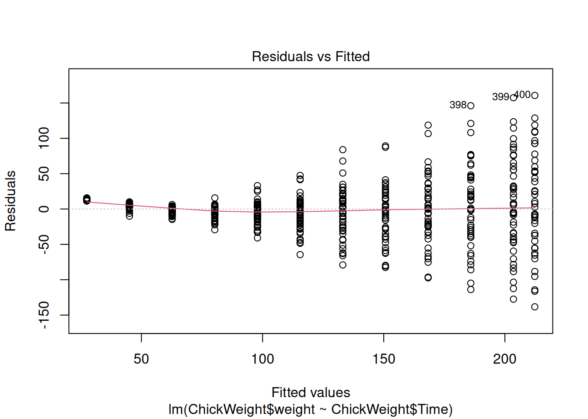
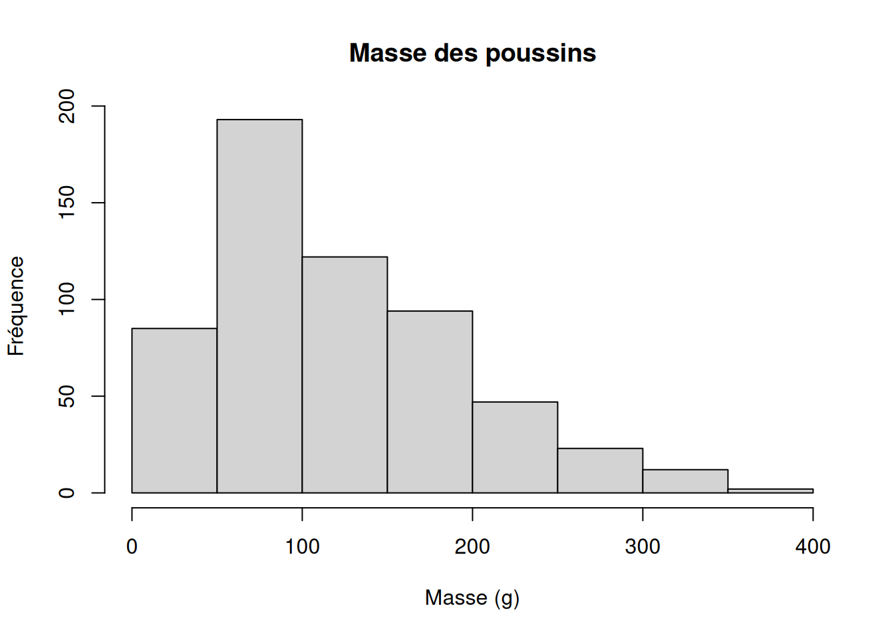
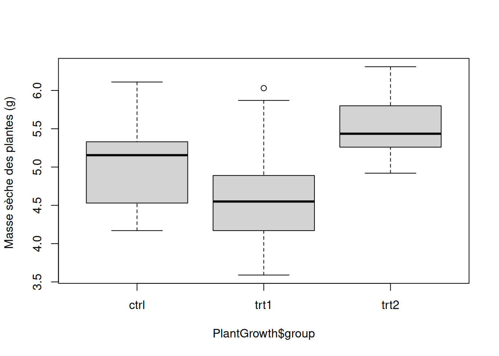
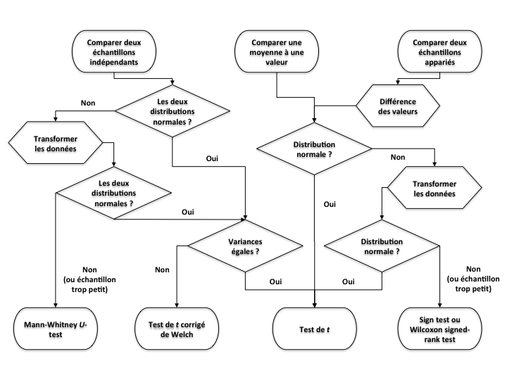
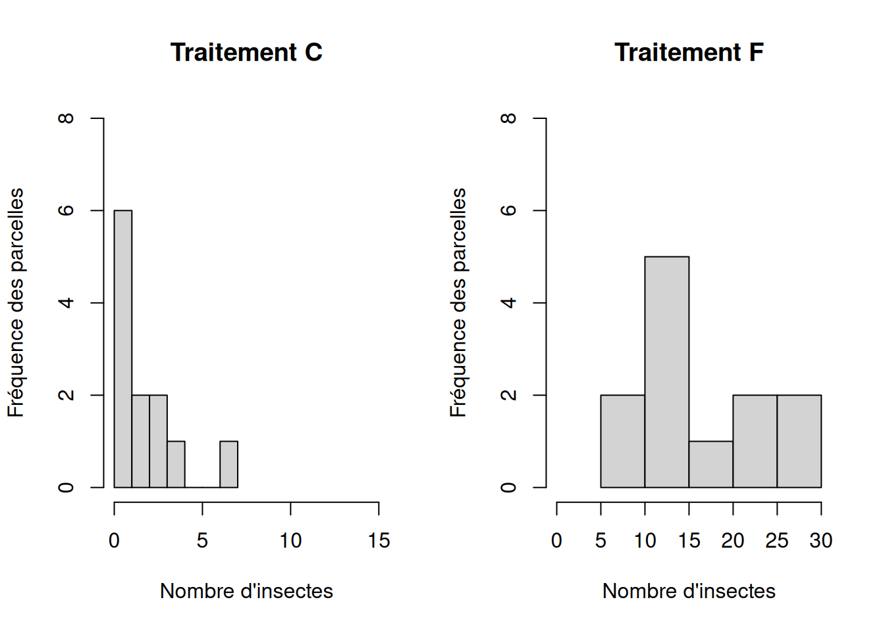
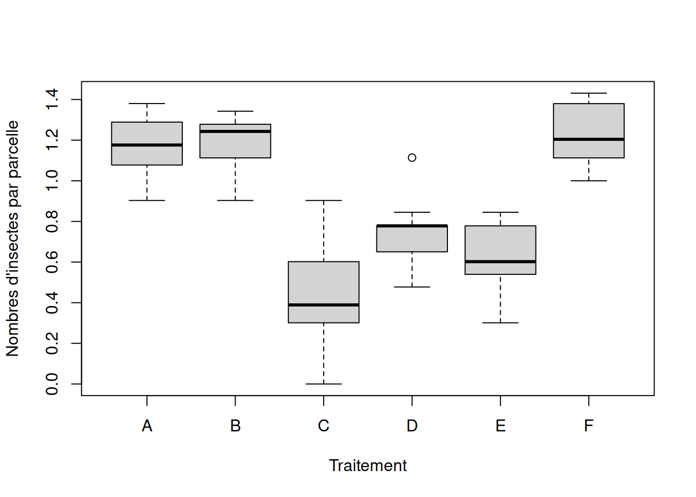

data(ChickWeight)
test <- lm(ChickWeight$weight ~ ChickWeight$Time)
plot(test, which = 1)
À la fin de cette capsule, vous serez en mesure de:
plot().Télécharger le script R de la vidéo (Faire boutton droit -> enregistrer sous…)
Veuillez noter qu’il est possible d’avoir plus d’une bonne réponse par question. Vous pouvez reprendre chaque exercice grâce aux boutons “Start Over” ou “Try Again” Le bouton “hint”” est là pour être utilisé!
Même si vous n’êtes pas (encore) familier avec la régression linéaires, sachez que cette opération statistique doit respecter les mêmes conditions d’application que l’ANOVA, plus d’autres qui lui sont spécifiques.

Les valeurs de la variable réponse (dépendante) utilisée dans ce test suivent cette distribution de fréquence :

Voici un boxplot de groupes de valeurs dont vous voulez comparer les moyennes au moyen d’une ANOVA à un facteur :
data("PlantGrowth")
boxplot(PlantGrowth$weight ~ PlantGrowth$group,
main = "",
ylab = "Masse sèche des plantes (g) ", col = "lightgray"
)
Utilisez cette fonction pour faire le test d’homogénéité des variances en utilisant la variable réponse PlantGrowth$weight et le facteur de groupe PlantGrowth$group. N’oubliez pas que vous pouvez utiliser l’aide de la fonction…
Voici un ensemble de commandes organisées en script (voir capsule #5).
Tapez InsectSprays dans l’aide de R pour en savoir plus (voir capsule #1).
Il s’agit d’un jeu de données fourni avec R donnant les comptes d’insectes trouvés sur des parcelles traitées avec différents insecticides. On va d’abord charger le jeu de données, puis le rendre accessible en premier plan dans la mémoire de R :
Ici on veut comparer les nombres moyens d’insectes trouvés après les traitements C et F. Le but de ce test est de vérifier si ces deux types de traitement permettent d’éliminer une quantité d’insectes similaire en moyenne (comparer si les échantillons proviennent de la même “population” statistique).
Afin de pouvoir se fier aux conclusions d’un test statistique, il faut s’assurer que nos données respectent les conditions d’application du test envisagé.
La première condition à vérifier est toujours la même pour tous les tests de base : il faut que les échantillons soient aléatoires et indépendants !
Ensuite, d’autres conditions spécifiques à chaque test doivent être remplies. La figure ci-dessous rappelle les vérifications à faire pour correctement choisir le test de comparaison de moyennes à effectuer sur nos données. Les losanges indiquent les étapes de vérification des conditions d’application de chaque test possible.

Pour un test de comparaison de moyenne paramétrique standard (test de t), il faut ainsi vérifier (i) la normalité et (ii) l’homogénéité des variances des données de nos deux échantillons.
On vérifie d’abord visuellement la distribution de fréquence des données :
# Histogrammes pour vérifier la normalité des distributions de valeurs de mass
par(mfrow = c(1, 2))
hist(
InsectSprays$count[T.C],
xlim = c(0, 15),
ylim = c(0, 8),
xlab = "Nombre d'insectes",
ylab = "Fréquence des parcelles",
main = "Traitement C"
)
hist(
InsectSprays$count[T.F],
xlim = c(0, 30),
ylim = c(0, 8),
xlab = "Nombre d'insectes",
ylab = "Fréquence des parcelles",
main = "Traitement F"
)
Il apparait évident à l’allure asymétrique des deux distributions de fréquence que les valeurs des deux échantillons ne sont pas normalement distribuées. De plus, la première distribution en particulier fait apparaitre des valeurs extrêmes, très éloignées des autres : ce sont des outliers; il faut y apporter une attention particulière (voir ci-dessous). Nous pouvons le confirmer avec un test statistique de Shapiro-Wilk qui compare la distribution de l’échantillon à la distribution nulle Normale : shapiro.test()
Shapiro-Wilk normality test
data: InsectSprays$count[T.C]
W = 0.85907, p-value = 0.04759
Shapiro-Wilk normality test
data: InsectSprays$count[T.F]
W = 0.88475, p-value = 0.1009Dans le premier cas, la valeur de la p-values tout juste inférieure au seuil alpha de 0.05 indique que l’on peut rejeter l’hypothèse nulle testée que l’on peut formuler ainsi : “il n’y a pas de différence entre la distribution des valeurs échantillonnées et une distribution Normale”. Par contre, malgré l’allure non symétrique de la distribution des valeurs pour le traitement “F”, le test ne permet pas de rejeter l’hypothèse nulle. Ceci permet d’insister sur le fait que la vérification visuelle n’est pas toujours évidente; à l’inverse, un test formel n’est parfois pas assez “puissant” pour rejeter l’hypothèse nulle. Cela a souvent à voir avec le nombre de valeurs dans l’échantillon. En effet, plus il y a d’observations, plus le test est puissant.
Que peut-on faire lorsque les données ne sont pas distribuées normalement ?
Ici, nous travaillons avec des données qui sont distribuées asymétriquement avec une dominance des faibles valeurs, et quelques fortes valeurs. Ce type de distribution correspond typiquement à une distribution log-normale, c’est-à-dire que les valeurs transformées par un logarithme suivent une distribution Normale. Ceci souvent le cas pour des jeux de données impliquant des masses, volumes, concentrations, taux, etc. La transformation logarithmique a en plus l’avantage de réduire l’influence des valeurs extrêmes (outliers ci-dessus) et d’égaliser les variances (voir ci-dessous). Nous créons donc une nouvelle variable qui servira pour nos analyses de comparaison de moyenne :
N’oubliez pas que log(0) n’existe pas ! Donc si vous avez des valeurs nulles, la transformation à faire est log( valeur + 1 ). Soyez attentifs aux spécificités des fonctions mathématiques que vous utilisez.
N’oubliez pas de transformer toutes les valeurs de la même façon (pour chaque groupe) dans le cas de comparaisons de moyennes !
Encore une fois, on peut se fier à l’allure des distributions de valeurs (d’après l’étendue des valeurs d’un boxplot, par exemple).
boxplot(InsectSprays$logCount ~ InsectSprays$spray, xlab = "Traitement", ylab = "Nombres d'insectes par parcelle")
On remarque sur ces boxplots que les distributions des valeurs semblent effectivement plus symétriques (Normales) après transformation, même s’il reste un outlier dans le groupe D. De plus l’étendue des distributions de valeurs transformées semble plutôt similaire entre les groupes. Mais on peut également faire un test formel d’homogénéité des variances :
F test to compare two variances
data: InsectSprays$logCount[T.C] and InsectSprays$logCount[T.F]
F = 3.1384, num df = 11, denom df = 11, p-value = 0.07059
alternative hypothesis: true ratio of variances is not equal to 1
95 percent confidence interval:
0.9034831 10.9019558
sample estimates:
ratio of variances
3.138428 La p-value > seuil alpha de 0.05 indique que les variances des insectes dénombrés sur les parcelles traitées pour les deux traitements ne sont pas significativement différentes à un seuil de confiance de 95% (19 fois sur 20). Le résultat du test nous donne par ailleurs le ratio des variances F = 3.13 et sont intervalle de confiance (très large) à 95% (0.90 < F < 10.9) n’exclue pas la valeur nulle de 1.
Ici on veut faire le test de comparaison de moyennes de façon appropriée. Il faut maintenant prendre en compte les résultats de notre vérification a priori des conditions d’application du test, et faire ce test sur les valeurs transformées. Il faut savoir qu’il y a plusieurs arguments (options) à la fonction t.test() pour lesquels nous pouvons préciser la valeur (voir capsule #3). L’aide de la fonction qu’on peut obtenir en tapant ?t.test dans l’invite de commande nous donne :
## Default S3 method:
t.test(x,
y = NULL,
alternative = c("two.sided", "less", "greater"),
mu = 0, paired = FALSE, var.equal = FALSE,
conf.level = 0.95, ...
)Ici il y a une (1) option directement reliée à la condition d’homoscédasticité (égalité des variances) : var.equal = qui devra indiquer par les valeurs logiques TRUE ou FALSE si on considère que les variances des deux échantillons sont homogènes.
La valeur par défaut de cette option est FALSE; donc R fait par défaut un test corrigé de Welch !
Dans notre cas, les variances des groupes comparés sont homogènes, donc il faut spécifier la valeur suivante lors du test dans R :
Two Sample t-test
data: InsectSprays$logCount[T.C] and InsectSprays$logCount[T.F]
t = -9.091, df = 22, p-value = 6.638e-09
alternative hypothesis: true difference in means is not equal to 0
95 percent confidence interval:
-0.9936932 -0.6245354
sample estimates:
mean of x mean of y
0.4137119 1.2228262 La p-value << 0.05 permet de conclure que ces deux types de traitement conduisent à des nombres d’insectes moyens différents, 19 fois sur 20 (confiance à 95%).
Il s’agit maintenant de vérifier a posteriori les conditions d’application du test statistique paramétrique.
La vérification des conditions d’application d’un test peut souvent se faire a priori (avant l’analyse), mais aussi a posteriori (après l’analyse) sur les résidus.
Le terme résidus indique essentiellement les valeurs de l’écart de chaque observation au modèle nul défini pour le test paramétrique effectué.
Il existe plusieurs tests pour lesquels l’analyse des résidus a posteriori est la meilleure option, comme dans le cas d’une analyse de régression (voir capsule #11). Ici nous prendrons l’exemple d’une analyse de variance sur nos données de masse des poussins.
Il s’agit ici de comparer les quantités d’insectes moyennes retrouvées sur les parcelles traitées avec chacun des produits. Nous faisons donc, d’abord sur les données brutes (non transformées), l’ANOVA suivante (voir capsule #8) :
Df Sum Sq Mean Sq F value Pr(>F)
spray 5 2669 533.8 34.7 <2e-16 ***
Residuals 66 1015 15.4
---
Signif. codes: 0 '***' 0.001 '**' 0.01 '*' 0.05 '.' 0.1 ' ' 1La conclusion de ce test semble claire : la très faible p-value indique que le nombre moyen d’insectes d’au moins un des groupes diffère des autres, 19 fois sur 20 (confiance à 95%). MAIS POUVONS-NOUS NOUS FIER À CES RÉSULTATS ? Nous allons évaluer le respect des conditions d’application a posteriori sur les résidus de l’analyse déjà effectuée.
La fonction plot() reconnait le type de la variable analyse, c’est-à-dire un résultat de test statistique, et elle produit automatiquement plusieurs graphiques diagnostiques (par défaut). On en a choisi trois ici.
Le premier représente simplement les valeurs de chaque résidu (écart) en fonction de la valeur “prédite” par le modèle nul testé. Dans le cas de l’ANOVA, il s’agit simplement de la moyenne de groupe ! Ce premier graphique permet déjà de vérifier la normalité des résidus et donc des valeurs : Sont-ils répartis symétriquement de part et d’autre du 0 ? Ce n’est pas vraiment le cas ici ! Il permet également d’avoir une idée de l’homogénéité des variances : Les étendues des valeurs sont-elles comparables entre les groupes ? Ça n’est pas le cas non plus. Finalement, si la droite indicatrice rouge dévie notablement de l’horizontale, ceci indique d’autres problèmes tels que la non-linéarité des relations entre variables dans le cas d’une régression (voir capsule #11).
Le deuxième représente spécifiquement la normalité des résidus en comparant la distribution de leur valeur standardisée à une droite théorique qui représente une distribution normale idéale. On voit encore une fois que les valeurs ne sont pas normalement distribuées.
Le troisième présente finalement la distance de Cook, c’est-à-dire le “poids” relatif de chaque valeur individuelle sur la conclusion de notre analyse; il permet d’identifier des points qui influencent de façon disproportionnée nos conclusions. Ce sont encore une fois des “outliers” dont il faut se méfier. Une valeur > 0.5 est problématique.
Consulter l’aide à propos de la fonction plot.lm() pour plus de détails sur ces graphiques.
On peut voir la différence de résultats en refaisant ce diagnostic visuel sur les résultats de l’analyse effectuée sur les valeurs transformées pour satisfaire aux conditions d’application. Les conclusions de cette inspection visuelle confirment les bienfaits de transformer nos données !
Le matériel pédagogique utilisé dans cette capsule est disponible pour le téléchargement sous deux formats différents:
Pour télécharger le fichier localement sur votre ordinateur, tablette ou téléphone portable, il suffit de cliquer sur le lien désiré avec le bouton droit de votre souris et choisir “sauvegarder sous…”.
Télécharger la documentation sous format PDF